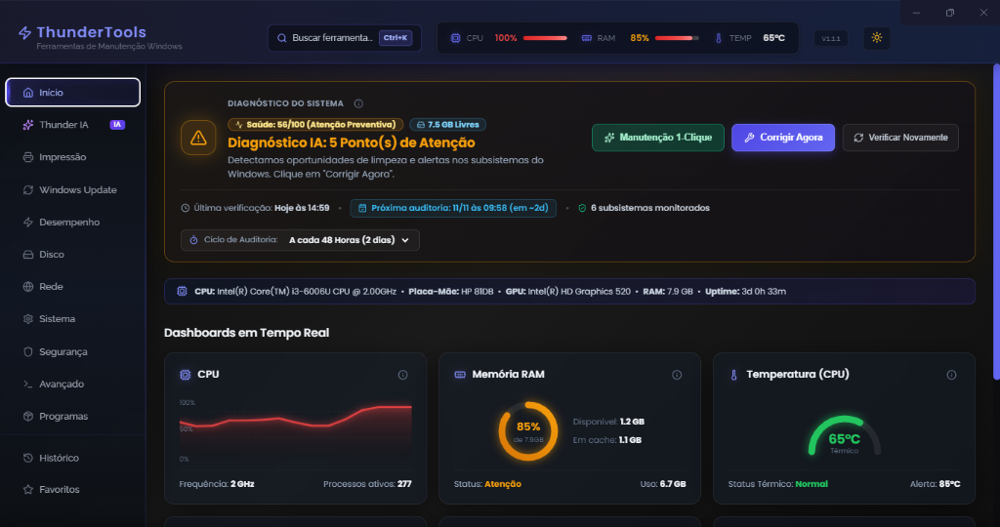

Mais de 60 ferramentas especializadas para otimizar o Windows, resolver erros críticos e gerar laudos técnicos profissionais em segundos.

Chega de perder horas decifrando logs gigantescos, códigos crípticos do Visualizador de Eventos ou telas azuis (BSOD). A Thunder IA analisa a saúde do sistema, correlaciona eventos críticos, identifica a causa raiz exata e gera na hora um plano de ação automatizado com comandos executáveis.
dism /online /cleanup-image /restorehealth
▶ Executar
sfc /scannow
▶ Executar
Entregue valor real aos seus clientes. Gere documentos técnicos profissionais com inventário completo de hardware, histórico de ações e espaço em disco recuperado.
Cada teste executado no ThunderTools pode ser registrado na sessão e impresso com design cristalino. O documento traz especificações completas de Processador, Placa-Mãe, Memória RAM, Armazenamento, BIOS e Placa de Vídeo.
Tudo o que você precisa para manter computadores operando com máxima velocidade, estabilidade e segurança.
Varredura automática de logs do sistema, códigos de erro BSOD, diagnóstico de causa raiz e geração instantânea de comandos de correção.
Checklist guiado de alta velocidade: Limpeza Temp, Flush DNS, Fila de Impressão, TRIM e SFC executados em fila com relatório antes vs. depois.
Gere ordens de serviço detalhadas para clientes e assistências técnicas, com inventário de hardware, espaço liberado e assinaturas.
Exporte todos os drivers de terceiros instalados (DISM / PnPUtil) para uma pasta segura antes de formatar a máquina do cliente.
Mapeamento detalhado de pentes físicos, barramento (MHz), slots livres, tecnologia (DDR4/DDR5) e limpador de Standby List em cache.
Percentual de saúde do SSD/NVMe, temperatura, horas de uso e Radar de Arquivos Gigantes para liberar gigabytes de espaço.
Teste de velocidade de conexão integrado (ping, jitter, download e upload), benchmark de DNS rápido e visualizador de senhas Wi-Fi salvas.
Pause atualizações por até 365 dias, desinstale KBs problemáticos com 1 clique e bloqueie a substituição de drivers de vídeo/áudio.
Correção automática dos famosos erros de rede 0x0000011b, 0x00000709 e backup completo de impressoras (PrintBRM) para pós-formatação.
Desbloqueie o plano oculto "Ultimate Performance", otimize efeitos visuais para PCs lentos e encerre processos pesados em tempo real.
Remoção segura de telemetria e anúncios do Windows, auditoria de portas por executável, restauração do arquivo HOSTS e scan Defender.
Instalação automatizada pós-formatação de Runtimes Visual C++ All-in-One, .NET, DirectX, navegadores e programas essenciais em lote.
Projetado para técnicos e entusiastas: telemetria fluida, busca global instantânea (Ctrl + K) e comandos com feedback em tempo real.
Acompanhe as melhorias e novidades implementadas no ThunderTools.
Leve, otimizado e compatível com computadores modernos e corporativos.
Baixe o ThunderTools agora mesmo e tenha em mãos a potência da Thunder IA, geração de laudos em PDF e mais de 60 ferramentas especializadas.